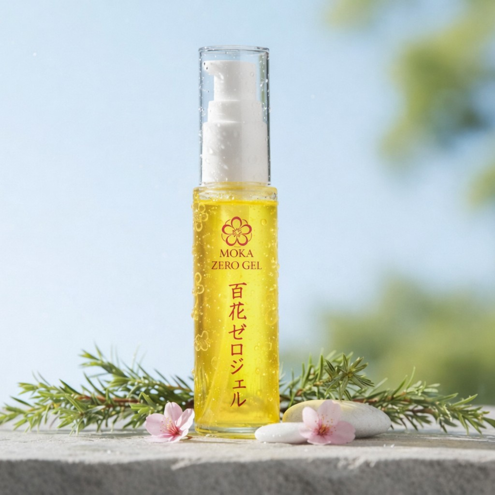

歯科の現場から生まれた、天然ジェル。
泡立たない・木曽檜由来・家族で使える。毎日続けやすいつくりにしました。
木曽檜の水をベースにした、やさしいジェルです。
ほとんどが天然由来。添加物は少なめです。
泡でごまかさず、のど奥まで届いてすっきり。
低刺激で、無理なく続けられるつくりです。
お子さんから大人まで、1本でそろえられます。

歯科の現場から生まれた、
天然の泡立たないジェル。
木曽檜由来・天然成分を中心に、毎日続けやすいつくりにしました。
泡立たないので、口の奥まで届きやすい。低刺激で、お口を清潔に保つ使い心地にこだわりました。
家族みんなで使えます。
定価 ¥2,980
¥2,280 (税込)
公式限定価格 送料無料
歯みがき後に口がピリピリする
低刺激の泡立たないジェルで、やさしくお口を清潔に。
泡が多くて、磨けているかわからない
泡立たないから、みがき心地がわかりやすい。口の奥まで届くつくりです。
子供と一緒に使える歯みがきがない
家族で使える設計。お子さまにも配慮した、やさしいつくりです。
成分が気になる
天然成分を中心に、添加は最小限。何が入っているか、わかりやすい配合です。
歯科の現場で、口臭や歯ぐきの悩み、市販の歯みがきでは物足りないという声をよく聞きます。
だから、毎日使い続けられるように、必要なものだけを入れたジェルをつくりました。売るためではなく、必要だから。
木曽檜の水を基材に、泡を抑えたつくりで口の奥まで届くようにしています。
余計な香料や発泡剤は使っていません。シンプルに。
歯科の視点で、必要なものだけを選びました。
やさしさと、毎日続けられるバランスを大切にしています。
天然由来を中心に、不要な添加はできるだけ避けました。
医療法人百花繚乱が関わってつくっています。
安心して続けてもらえるものを、と考えています。
歯科の現場を通じて、毎日のケアの大切さを実感してきました。
お子さまから大人まで、1本で使えるやさしさにこだわりました。低刺激で、毎日の口腔ケアに。
医療法人百花繚乱が関わってつくっています。家族で安心して、長く使えるジェルです。
2026.2.13
百花ジェルでの通販サイト始めました